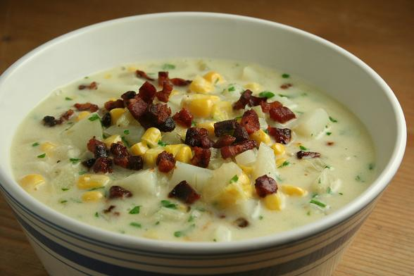

Chicken Corn Chowder

Ingredients
- 5 strips bacons
- 4 cups chicken broth
- 1 teaspoon hot sauce
- 1 teaspoon Worcestershire sauce
- 1 small onion
- 2 Tablespoons butter
- 1-2 jaleponos
- 3/4 cup red bell pepper
- 3 cloves garlic
- 1/3 cup flour
- 2 cups half and half
- 1 bay leaf
- 1 can chicken
- Salt/Pepper
- 1 LB
- 1 can corn
- 1 cup cheddar cheese
- 1/3 cup green onions
Seasonings
- 1/2 teaspoon EACH Salt,Oregano,Paprika,Mustard powder,Chili powder, Cumin
- 1 pinch Cayenne Pepper
Instructions
- Cook the Bacon slowly over low heat
- while the bacon cooksCombine the chicken broth, hot sauce, Worecestershire suace,and seasoning in a large measuring cup and set aside Measure out remaing ingredients before beginning
- soften the onions over medium heat for 3 min then add the butter, Jalepeno peppers, bell peppers, and garlic soften for 3 more minuters
- Add the Flour and cook for 2 min until it begins to brown
- Add the chicken broth mixture(from step 2) in small splashes stirring continuously.Add the half and half in the same mannerAdd the bayleaf Bring to a boil then reduce ot a simmer
- Cut the chicken in half lengthwise and season each sife with salt and pepperadd it to the chowder and bubble very gently uncovered until the chicken is cooked through 15-20 min Remove and let rest
- Add The diced potatoes and simmer uncovered until fork temer another 20-25 min
- Dice the chicken and add it to the chowder along with the cornLet it heat through for 1-2 min then reduce heat to low
- Gradually stir in the cheeseuntil melted (if using ) Remove the bay leaf Garnish with chopped bacon and greeen onions>
Notes
- the longer the soup simmers the thicker it gets , let it simmer for at least 20 min before adding the potatoes
- Heavy cream can be used instead of half and half